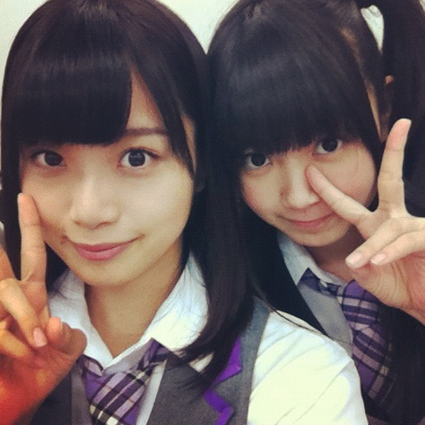

| 2012/06 07 Thu | ひめたん(* ゝω・*)ノ その161 |

 6/9に広島に行ってお好み焼きを食べたいと思ってるんだけど
6/9に広島に行ってお好み焼きを食べたいと思ってるんだけど
何かいいイベントないかなあ(笑)
これは宣伝しろってことかーしら(*^^*)にやにや
アクティブライフ2012
広島グリーンアリーナ
乃木坂46トークショーandミニライブ開催!
っちゅわけで
9日の広島イベントに向けてレッスンしてきまーした!
今思ったけど、ひめたんおいシャン初披露よ(*^ω^*)
初めてのおいシャンが地元広島なんてねー素敵じゃあないですか。
初めてみんなでリハしたんだけど、チームワークの良さね!
さっすがーうちらは乃木坂上り坂やあー。
あとは個々で詰めてって、本番では素敵なステージがお届けできるように頑張ります＼(∀)／☆
にしても。
ひめたんが広島で歌うの踊るの久しぶりなよー10ヶ月ぶりとか?
地元のみなさんには、あーひめたん頑張ってるなってのを感じてもらいたいし
乃木坂初めてましてのみなさんには、乃木坂のこと好きになってもらいたいし
まーとにかく来てくださーい迷ってる人は来てください

特にひめきゅんさんには損させないから!!!
土曜日って忙しいからあれだけど、一緒に乃木坂充するしか＼(∀)／
アンケートありがとうございました(*^ω^*)
みんなが好きな色を集めたらカラフルなよねー。
パレットできそうなよ。鮮やかな絵か描けちゃうね。
さっすが乃木坂ふぁみりー。さっすがひめきゅんさんやー!
あっひめたんの好きな色はみなさん知っとるよーね?
うんそうだよ
ぴんく
だよぴんく!
はいはい今日の質問ー
朝ごはんは和食?洋食?中華?フレンチ?その他?
僕は6月生まれで6月5日だよーー＼(^O^)／
お誕生日おめでとーうございます!
そかそかーひめたんとろってぃのラジオオンエアの日だったのねー奇遇や!
ほんわか素敵なプレゼントになったかしらー(^ω^)?
6月6日産まれました(゜▽^*)お祝いしてね!!
おめでとーう!ひめきゅんさんの中に1日違いのお誕生日さんおったよん♪
6月6日って響きとか、書いた感じとか、かわうーい///
 ひめたん9日楽しみじゃろ?(●'∀`●)
ひめたん9日楽しみじゃろ?(●'∀`●)
楽しみすぎてやばーいよー!
3ヶ月ぶりの広島よー
絶対絶対成功させてやるんだからっ
広島のみなさん楽しみに待っとってください(^^)☆
ひめたんは自分の生まれた所は好きかな??
好きよー＼(^O^)／
都会ちっくなとこも、田舎いっくなとこもあって落ち着くし
ふぁんの方もとってもとってもあったかい!
さらに広島弁ってなんか親近感わくでしょ(^ω^)?
何言いよるかわからんとか言わないでーね?
 イベには広島出身のひめたんは出るの??
イベには広島出身のひめたんは出るの??
でるよーいえあ!
 東京って毎日が新鮮で日々発見があるから時間経つの早く感じます。
東京って毎日が新鮮で日々発見があるから時間経つの早く感じます。
ひめたんはどう感じていますか?
ほんとーそれです。
ちっちゃいことにいちいち感動する!
毎日が新鮮って幸せだよね(*^^*)毎日感動するなんて素敵じゃーん♪
 広島と東京の食べ物はどう?違いがあるの?
広島と東京の食べ物はどう?違いがあるの?
広島のもやしは細いのよー。
前にメンバーの子とお好み焼き食べたときは、もやしの細さに
びっくりしとった気がするなあ。
あとはソースって言ったらお好みソースだったけど、
最近は街でお好みソースを見ない('・・`)
 東京はエスカレーターのるとき左側にのって右側空けるけど
東京はエスカレーターのるとき左側にのって右側空けるけど
大阪は逆なんだってさ〜広島は?どっち空けるの?
広島は東京と一緒だよ('`)
イベントとかで大阪行ったら、エスカレーターにはいっつも戸惑うの。
あれーどっちだったっけなーて...
 最近、少し心が凹んでいます...ひめたーん元気をわけて!
最近、少し心が凹んでいます...ひめたーん元気をわけて!
あんれまー大丈夫?
おかしいねーもう５月は終わったのにね('・・`)
とにかく無理はせんことよ。空元気しよったらかえって辛いからねー。
何か夢中になれるようなもの見つかったらいいんだけどねー?
 写メのスイーツは6月生まれのひめきゅんバースデーケーキかな?
写メのスイーツは6月生まれのひめきゅんバースデーケーキかな?
それはいいねえ。そうしよーうそうしよ(*^^*)
ちなみに説明しとらんかったけど、カップケーキだよ♪
プリンかな?とかって思ったよねーケーキです!
(*´・ω・*)ひめたん
コメント(115)
2012/06/07 23:54